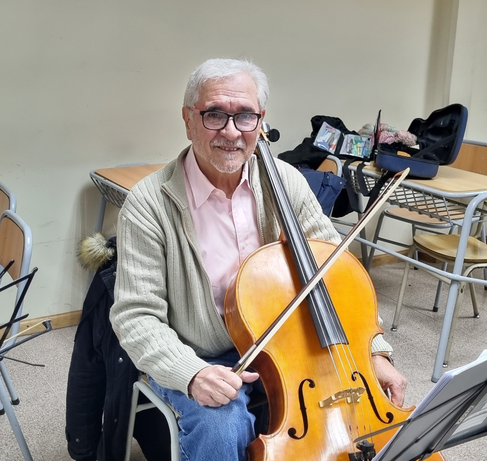

Hugo Daniel Ovejero
(Violonchelo)
Nacido en San Miguel de Tucumán, inició sus estudios en La Escuela de Música de la UNT con el Mtro Mario Coñatto. Fue integrante de la Orquesta Sinfónica de Ba Bca desde el año 1983 hasta el 2018 año en que se jubila. Desde entonces a sido parte integrante de La Banda Sinfónica hasta la fecha. También integró como parte de la del musical "La Desgracia". Colabora con los profesores Pedro Zanek y Fernando Duarte en las clases de "Ensamble de Cuerdas" del Conservatorio Prov de Música. Es parte del staff de profesores de La Orquesta Estudiantil de Punta Alta.